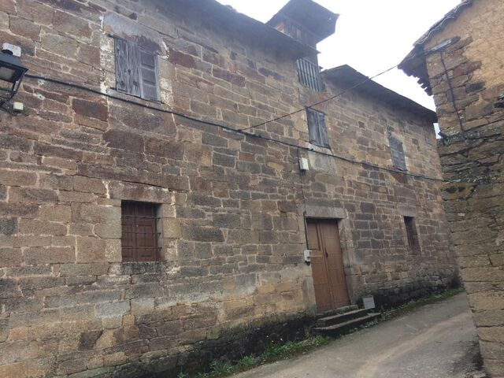

Este pueblo, pertenece a la comarca de La Carballera, se encuentra asentado a los pies de la isla de la isla de la culebra, que determina su termino hacia el sur y configura un paisage caracterizado frondosos bosques de repoblación de coniferas , que para los que no sepan lo que es es un arbol muy tipico de esa zona, pero tambien hay muchos y en menor medida, de bosques autóctonos de roble, melojo y castaño. Por el norte se encuentra rodeado por los pantanos de Agavanzar, Valparaiso y Cernadilla.
Por lo que esta localidad es perfecta para pasar un dia o un fince semana recorriendote bosques y por la tarde pegandote un baño en el embalse que esta a 1km del pueblo.
Pero no solo es una maravilla lo que esta asu alrededor sino que su casco urbano que constituye la villa, fue declarado bien de interés cultural en la categoría de conjunto histórico en 1987. En él destaca la iglesia de Nuestra Señora de la Asunción y un buen número de grandes casonas de dos y tres plantas construidas en piedra rojiza de sillares o con mampostería bien trabada, en las que destaca el volado al exterior de sus galerías. Junto a estas edificaciones hay otras, también en piedra, que se caracterizan por su mayor sencillez y por utilizar las galerías y las solanas como elementos constructivos identificativos.
En la edad media, Villadeciervos quedo integrado en el reino de Leon cuyos monarcas cometieron la repoblación del oeste zamorano. Por lo que si caminas por sus calles al ver que todas sus casas son de piedra te van a trasmitir una senscion de estar en el pasado
En el siguiente video se puede ver como el canal de noticias de Zamora- La 8- hace un reportage por la localidad y escplica detalladamente la historia, con la actualidad y toca un poco de todo para que las personas que nunca han ido a esa localidad ya cuendo vallan ya sepan con que se van a encontar y pues puedan mejorar su esperiencia en la villa.